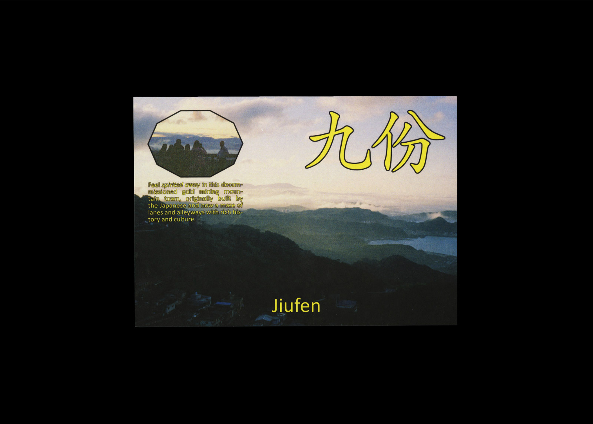

A to B, 146 pages, 190.5 × 190.5 mm, 2019
An ongoing series of postcards based on places I have visited, using photo and video taken on location. This project revolves around capturing a sense of place, as well as experimentation with type and image based on memories


An ongoing series of postcards based on places I have visited, using photo and video taken on location. This project revolves around capturing a sense of place, as well as experimentation with type and image based on memories

Souvenir, various postcards, (2019–)
An ongoing series of postcards based on places I have visited, using photo and video taken on location. This project revolves around capturing a sense of place, as well as experimentation with type and image based on memories of a trip.
An ongoing series of postcards based on places I have visited, using photo and video taken on location. This project revolves around capturing a sense of place, as well as experimentation with type and image based on memories of a trip.
This Page Was Intentionally Left Blank, 74 pages, 210 × 297 mm, (2019), with Leitu Letia
This document explores various and meandering topics including: failed projects, relinquishing creative control to others, adaptation in order to create better work and what can be learnt from other fields. It is the result of discussion, workshopping and distraction across the span of three months.
This document explores various and meandering topics including: failed projects, relinquishing creative control to others, adaptation in order to create better work and what can be learnt from other fields. It is the result of discussion, workshopping and distraction across the span of three months.